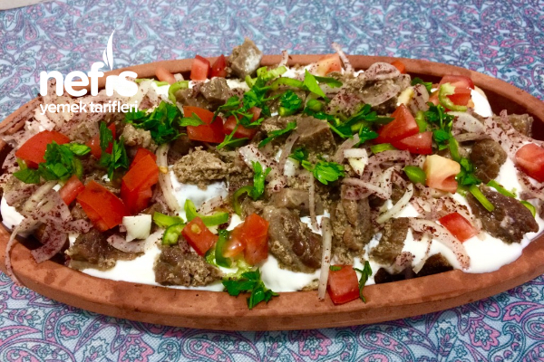
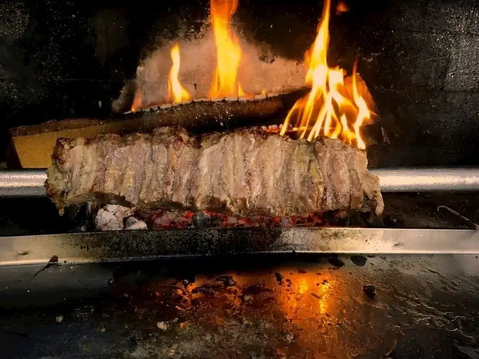
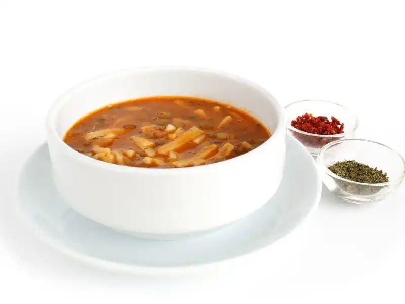
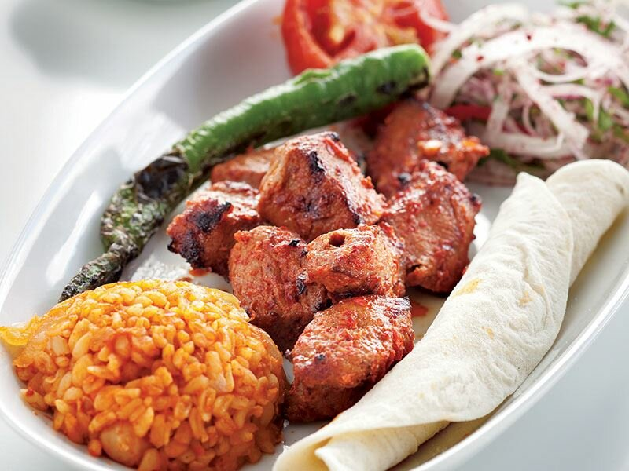
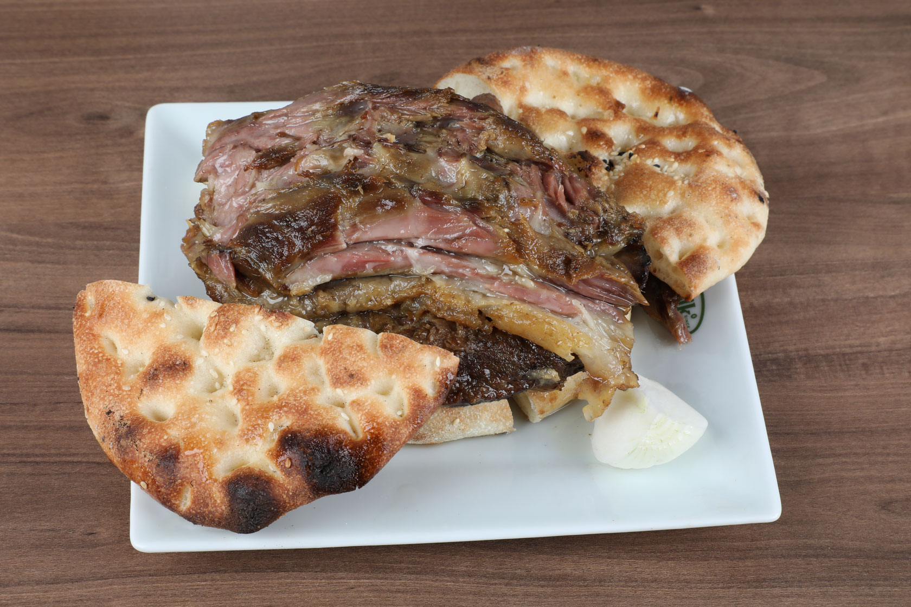
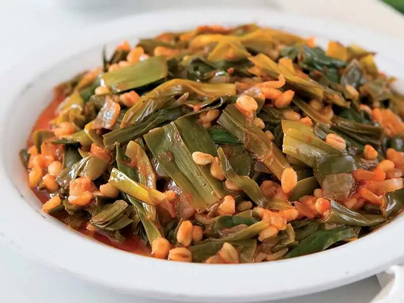
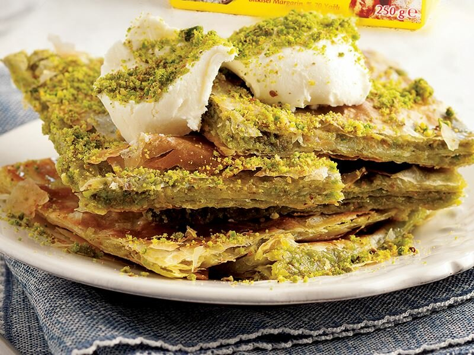

Şiveydiz kuzu eti, taze sarımsak ve nohut ile hazırlanır. Özellikle Nisan ve Mayıs aylarında tüketilen şiveydiz, pırasa ve farklı baharatlarla zenginleştirilir.

Tirit
30.99
Kuşbaşı et, tandır ekmeği, süzme yoğurt ve sebzeler

Cağ Kebabı
55.99
Erzurum yöresine özgü bir lezzet olan cağ kebabı, kuzu eti veya oğlaktan yapılır. Türk mutfağında önemli bir yere sahip olan bu kebap, önceden terbiye edilen et şişe geçirilerek yatay bir şekilde pişirilir. Odun ateşinde pişirilen bu kebabın ismi, cağ adı verilen şişlerden gelmektedir.

Kesme Aşı
32.99
El açması hamur ve isteğe göre kıyma ile hazırlanan bu çorbanın eşsiz bir lezzeti vardır.

Antep Kebabı
9.99
Antep mutfağında birbirinden farklı kebaplara rastlamak mümkündür. Bunlardan biri de kuzu eti, közlenmiş biber ve soğan ile hazırlanan Antep kebabıdır. Hazırlanan kebap, nefis bulgur pilavı ile birlikte sunulur.

Tandır Kebabı
45.99
Yöreye ait süt kuzusunun ön kol tabir edilen kısmının sadece tuz ve kendi yağında 2 saat kızartılır. Daha sonra 4 saat de fırında pişmesi ile yaklaşık 6 saatde hazırlanarak lokum kıvamına getirilir. Turnaklı pide ve soğan ile sunulur

Çiriş Otu Yemeği
22.99
Vitamin bakımından zengin olan bu besin; pilav, börek, çorba ve sulu yemeklerde kullanılır. Antioksidan özelliği sayesinde vücudun hastalık direncini arttırır. Romatizma ve kronik ağrıların tedavisinde kullanılır. Demir bakımından zengin olduğu için, kansızlığa ve saç dökülmelerine karşı olumlu bir etkisi vardır.

Katmer
33.99
Nefis mi nefis katmer tatlısına kim hayır diyebilir ki? Çıtır çıtır yufkası ve bol fıstıklarıyla Antep sokaklarında en çok rastlanan tatlılardan biri de katmerdir. Genellikle kaymak veya dondurma ile birlikte sunulur.